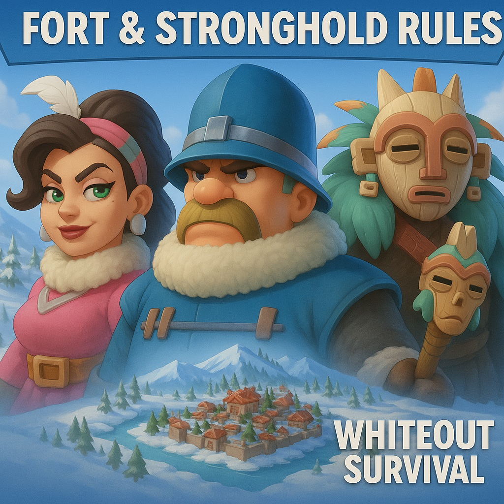

Welcome to State 214
State 214 is a global hub of strategy, strength, and community in the world of Whiteout Survival. Our alliances, events, and leadership stand out among the harsh frostlands. Whether you're a competitive player or a passionate contributor — this is your home.
❄️ About This Website
This site is created by players, for players — to serve as the official portal for:
- 🧭 Orientation for new players joining State 214
- 🏰 Fortress battle updates and schedules
- 🛡️ Alliance overviews and leadership contacts
- 📜 Official community rules and agreements
- 💬 Community tools such as Discord and events
🌐 Our Mission
We aim to keep State 214 fair, organized, and united. Through diplomacy, leadership and active communication, we foster a thriving community of diverse players from all over the world.
🎯 Join the Community
Get updates, participate in state-wide decisions, and make your mark. Join our official Discord server:
Enter State 214 Discord⚔️ Weekly Fortress Battles & SVS Preparation
Every week, alliances compete for control of the Fortress in preparation for the upcoming State vs. State (SvS) event. From Monday to Friday, the Fort phase helps shape the strength of our state.
Fortress Distribution After Ranking:
- Rank 1: 1x Stronghold & 4x Fort
- Rank 2: 1x Stronghold & 3x Fort
- Rank 3: 1x Stronghold & 2x Fort
- Rank 4: 1x Stronghold & 1x Fort
- Rank 5: 2x Fort
These structures are to be used wisely. Rewards from the Fortress must be managed strategically and saved specifically for SvS combat. Responsible leadership ensures the long-term strength and coordination of our alliances.
